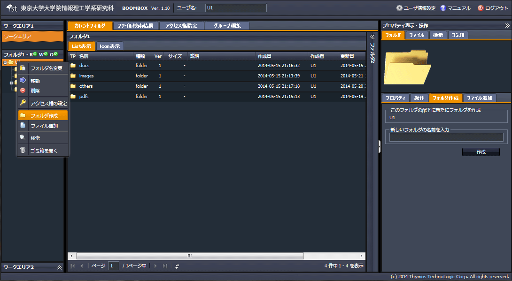
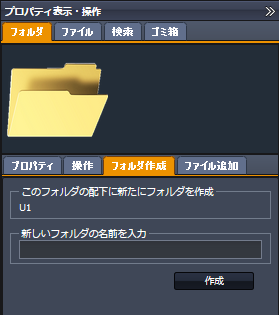
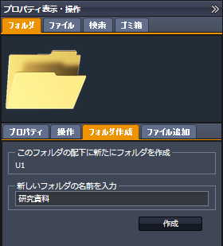
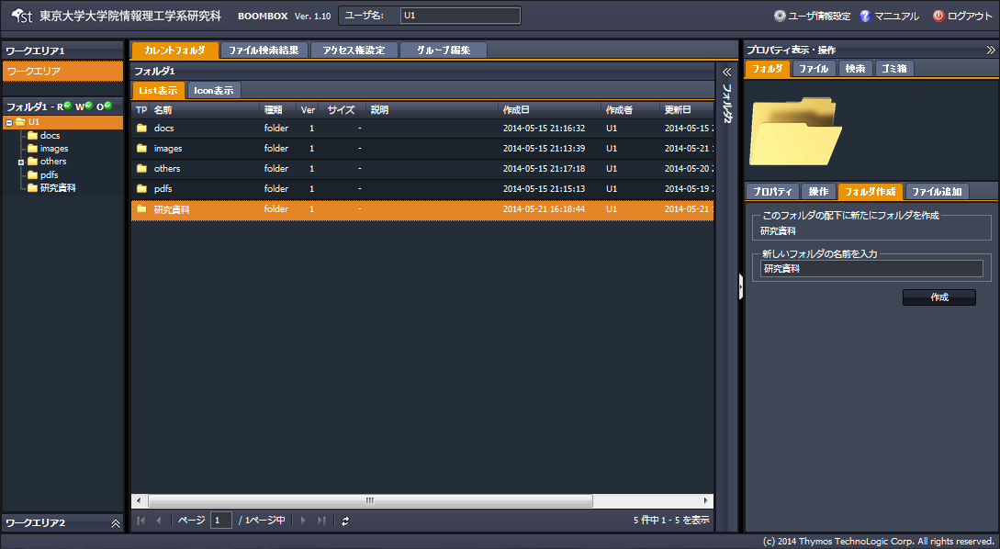

SecretFilesマニュアル
4.SecretFilesサービス(操作編)
4.2.5 フォルダの作成
フォルダを作成する手順を説明します。
(1) 対象フォルダを選択し右クリックメニューを開く
『フォルダ作成』をクリックします。
＊左ペイン、中央ペイン共に同じ動作となります。

(2) 自動的に以下構成の右ペインが開く
右ペインにて、【フォルダタブ】＋【フォルダ作成タブ】が開きます。

(3) フォルダ名の登録
【フォルダ作成タブ】に新しいフォルダの名前を入力し、『作成』をクリックします。

(4) 新しいフォルダの作成完了
右ペイン、中央ペイン共に、指定したフォルダ配下に、新しいフォルダが作成されます。
